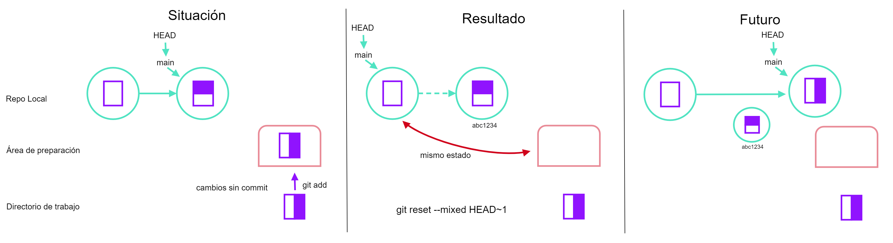
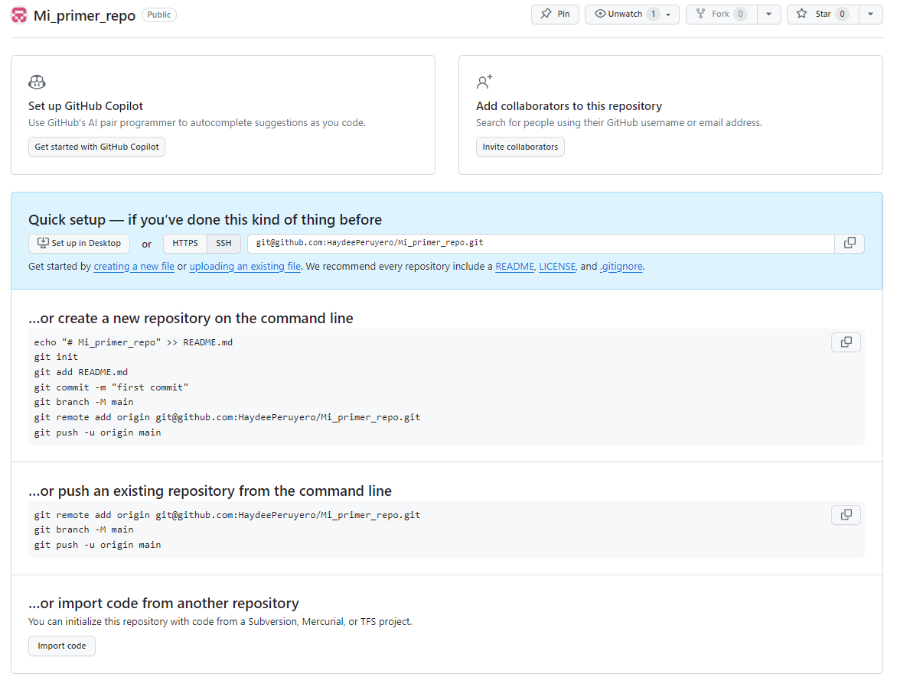

Sección 3 Git y Github
Usar control de versiones es una forma de manejar proyectos, todo a lo que se hace commit se pierde, se queda un registro de todos los cambios y siempre es posible regresar a una versión anterior. Nos evitamos estar enviando y enviando correos con versiones finales para después comparar versiones. Se guarda el usuario que hizo el cambio y automáticamente obtenemos una notificación de si intentamos modificar lo mismo que un colaborador para revisar cual cambio guardar.
Pueden pensar en versión de control como una forma de undo ilimitado y de trabajar paralelamente con sus colaboradores.
Lo primero que vamos a hacer es configurar Git en nuestra computadora.
Vamos a abrir Git bash y configurar nuestro usuario y correo con la que vamos a enlazar más adelante Github.
Ahora, vamos a configurar los saltos de línea para no tener conflicto según el sistema operativo.
# Mac o Linux
$ git config --global core.autocrlf input
# Windows
$ git config --global core.autocrlf truePara configurar el editor de texto por default:
Por default, Git inicializa un repositorio con una rama llamada master, a partir del 2020, la mayoría de los servidores de Git cambiaron esto a que la rama principal fuera main, para configurar esto usaremos lo siguiente:
Los comandos anteriores solo se necesitan configurar una sola vez. Para ver la configuración que acabamos de realizar y probar cual es nuestro editor de texto usamos lo siguiente:
Y para revisar esta configuración sin entrar al editor:
Si debieran hacer cambios en su usuario o correo o cualquier otra configuración lo pueden hacer ilimitadas veces con los comandos anteriores.
Para pedir ayuda nos sirve aún git comando -h o git comando --help, por ejemplo:
O para ayuda general de Git: git help.
3.1 Repositorios
Un repositorio es donde se va a almacenar toda la información de nuestro proyecto, es donde vamos a tener toda la historia y registro de cambios y usuarios. Es recomendable tener un repositorio por proyecto y no multiples proyectos en un solo repositorio.
Vamos a movernos a la carpeta del curso y vamos a hacer una carpeta para trabajar con git.
Para inicializar un repositorio usamos lo siguiente (dentro de la carperta).
Al inicializar el repositorio, cualquier carpeta y archivo que se cree dentro de la carpeta quedará su registro, no es necesario inicializar las carpetas anidadas.
Si revisamos que tiene la carpeta solo con ls no vamos a notar ningún cambio pero si listamos con la opción -a veremos que contiene archivos ocultos. En el archivo .git se almacena TODA la información de nuestro repositorio, así que si lo borramos perderemos todo el historial del repositorio.
Para cambiar manualmente la rama de nuestro repositorio si no es la main, lo podemos hacer como sigue.
Para preguntarle a git el estado de nuestro proyecto:
Si dentro de una carpeta preguntamos git status y obtenemos el siguiente mensaje:
fatal: not a git repository (or any of the parent directories): .gitsignifica que si podemos inicializarlo como un repositorio.
Ejercicio: Dentro de la carpeta Mi_primer_repo crea una carpeta llamada subproyecto1. Si quieres llevar un registro de lo que hagas en ese subproyecto, ¿debes inicializarla? Inicializala. Ahora, ¿cómo borras el archivo .git?
3.2 Rastrear cambios
Vamos a crear un archivo de texto dentro de la carpeta Mi_primer_repo.
Y escribamos algo en el archivo y guardemoslo.
Ahora, si preguntamos por el estado de nuestro proyecto vamos a obtener un mensaje de que hay algo nuevo:
El mensaje que dice untracked files nos indica que hay cambios y que a Git no se le ha indicado que debe registrarlos. Para añadir estos cambios hacemos lo siguiente:
Si revisamos el estado del proyecto vemos que ahora un mensaje diferente, ahora solo nos indica que no se ha realizado ningún commit pero que si se tiene registro de algo que cambio.
Para hacer un commit:
Este comando le dice a Git que tome todo lo que se añadió y que guarde una copia permanente dentro del directorio .git. Cada commit tiene un identificador único. Si no especificamos el mensaje, Git abrirá un editor de texto para colocar el mensaje. Los mensajes deben de reflejar lo que se está guardando para que sean útiles en el futuro.
Si ahora verificamos el estado del proyecto veremos que nos dice que no hay nada a lo que hacer commit ya que en el paso anterior añadimos todo y no hemos realizado ningún cambio.
Para mostrar el historial del proyecto:
Ahora, añadamos una línea nueva al archivo prueba.txt
Primer archivo en el que rastrearemos cambios.
Segunda línea de cambios para continuar con el ejemplo.Si revisamos el estado veremos de nuevo que nos devuelve el mensaje de que hay archivos sin rastrear. Para comparar las diferencias del archivo usamos:
El signo + nos está indicando cuales son los cambios en el archivo nuevo.
Vamos a hacer un commit de este cambio.
¿Qué paso? Nos esta diciendo que no hemos añadido nada al staged area a lo que le podamos hacer un commit, recuerden añadir todo antes de hacer commit.
Añadir todo primero al área de preparación nos permite tener un mejor control de a que le estamos haciendo commit, por ejemplo podemos añadir y hacerle commit solo al archivo donde tenemos la bibliografía y no a todo el proyecto donde hay partes no completas.

Ejercicio: Añadamos una tercera línea al archivo y verifiquemos las diferencias en los archivos, después añadamoslo al área de preparación y revicemos las diferencias. ¿Qué sucede?
Al añadirlo al área de preparación lo estamos añadiendo permanentemente, entonces no hay ninguna diferencia. Si queremos las diferencias con lo último a lo que se le hizo commit podemos hacer lo siguiente:
Ahora hagamos el commit.
Si revisamos el historial, veremos ahora 3 commit diferentes:
Cuando el historial es muy grande no nos va a mostrar todo el historial nuestra terminal, para ir avanzando debemos presionar Spacebar y para salir la letra Q. Al presionar / se puede buscar alguna palabra en los mensajes de los commits. Para limitar la cantidad de información que nos regresa log podemos especificar con la opción -n la cantidad de commits desde el más reciente. Para ver por ejemplo el último utilizariamos lo siguiente:
Si queremos ver los mensajes en una sola línea usamos:
Git no guarda información de directorios vacíos. Por ejemplo:
Si creamos un directorio con archivos, entonces si podemos añadir todos los archivos a la vez y si quedará el registro del directorio también.
$ git touch dic_prueba/prueba1.txt dic_prueba/prueba2.txt dic_prueba/prueba3.txt
$ git status
$ git add dic_prueba
$ git status
$ git commit -m "Ejemplo de como realizar un registro de directorios con archivos"En algunas ocasiones verán directorios vacíos con un archivo .gitkeep, este archivo es solo para que podamos añadir el repo a Git.
Ejercicio: Crea un archivo mi_archivo.txt, escribe algo en el y guárdalo en la ruta Mi_primer_repo. Añádelo a la historia de tu repo. ¿Cuáles son los pasos que debes realizar?
Ejercicio: Modifica el archivo prueba.txt añadiéndole una línea, ahora en el archivo mi_archivo.txt agrega algo y guárdalo. ¿Cómo añadirías los dos archivos al staging área? Añádelos y realiza el commit correspondiente.
Ejercicio: Crea un repositorio llamado bio. Escribe en un archivo llamado me.txt tres líneas de tu biografía, has un commit con tus cambios. Modifica una línea y agrega una cuarta línea. Muestra las diferencias entre el archivo en el staging área y el actual.
3.3 Explorando el historial
A los commits nos podemos referir a ellos con sus identificadores. Al último commit también nos podemos referir como HEAD. Añadamos una línea más al archivo prueba.txt.
Ahora, para ver el último cambio con el último commit:
Si quitamos el HEAD de esa última instrucción veremos lo mismo. Pero si colocamos un ~numero vamos a ver que nos estamos refiriendo al commit anterior número n.
Con git show vamos a ver los cambios con respecto a un commit anterior.
También podemos referirnos a los commit por su identificador de números y letras enorme o por los primeros 7 números o letras:
Revisemos el estado:
Con la siguiente instrucción podemos regresar las cosas a como estaban antes de hacer el último cambio.
O podríamos usar uno de los identificadores de commits:
Y para regresarlo al último commit de nuevo:
git checkout <ID commit> <archivo>, basdo en ASSPEl comando git checkout revierte los archivos a alguna versión anterior siempre que no lo hayamos añadido al staging área. Para revertir un commit usamos la instrucción git revert [ID commit]. Supongamos que tenemos un error en el archivo prueba.txt y que ya hicimos commit y queremos revertir al último cambio. Los pasos que haríamos serían los siguientes:
git logpara identificar el ID del commit.Copiar el ID del commit
git revert [ID del commit]para revertir a ese cambio.Teclear el nuevo mensaje de commit.
Guardar y cerrar
git revert <ID commit>, basado en APPSi ya añadimos los cambios al área de preparación, ya no podemos usar git checkout simplemente.
Ejercicio: Realiza las siguientes instrucciones:
Crea una carpeta llamada
learn_revert.Muévete a la carpeta
learn_revertInicializa el repositorio.
Crea un archivo llamado
first.txty añade una línea de texto.Agrégalo al área de preparación y realiza el primer commit.
Crea el archivo
wrong.txty agrega una línea de texto.Agrégalo al área de preparación y realiza un commit.
Agrega una segunda línea de texto al archivo
first.txt, guárdalo, agrégalo al área de preparación y realiza un commit.Agrega una tercera línea de texto al archivo
first.txt, guárdalo, agrégalo al área de preparación y realiza un commit.Queremos deshacer el commit realizado cuando se añadió el archivo
wrong.txt. Como este commit fue el segundo de donde no estamos, podemos usargit revert HEAD~2(o podemos usargit logy encontrar el ID de ese commit).
¿Está el archivo wrong.txt? ¿Qué sucede con el historial de commits?
Otras opciones del historial del commit:
- Para ver tanto las diferencias entre los archivos y los ID de los commits. Se puede colocar solo el nombre de un archivo y solo mostrara los commit que afectaban ese archivo o si no se coloca el nombre del archivo aplica sobre todo el historial de commits.
- Para mostrar las descripciones detalladas de las modificaciones y archivos.
- Para mostrar los nombres de los archivos afectados en cada commit.
- Para mostrar los archivos afectados en cada commit con la leyenda de si fueron modificados (M) o añadidos (A) o eliminados.
Consultar el siguiente link para ver más opciones y ejemplos.
3.4 Restore y reset
Otra forma de deshacer cambios es con restore y reset. Usualmente deshacer cambios se requiere para deshacer:
Cambios antes de mandarlos al área de preparación.
Cambios que ya se mandaron al área de preparación.
Commits
Supongamos que hicimos un cambio en el archivo de prueba y lo guardamos y después decidimos que ya no queremos ese cambio, entonces usamos la opción:
Esto nos regresará a la versión del archivo del último commit. Esto no se puede deshacer, una vez echo esto no hay forma de recuperar los cambios que se habían realizado.
git restore <archivo>, basado en ASSPAhora, supongamos que hicimos un cambio y lo mandamos al área de preparación, entonces para sacarlo de esa área usamos:
git restore --staged <archivo>, basado en ASSPTambién se pueden restaurar todos los archivos de un proyecto con:
Para restaurar a un commit anterior usamos el identificador del commit, por ejemplo:
Si ahora revisamos el estado del proyecto veremos que si hay cambios.
Agreguemos una línea al archivo prueba.txt y añadamos el cambio al área de preparación. Usen git checkout para ver si podemos revertir el cambio. Veamos que nos dice el estado git status. Si usamos git checkout -- prueba.txt ya no veremos errores pero tampoco se restaurará el archivo.
Para hacerlo debemos usar reset:
Y si usamos ahora:
Nos indica que ya podemos realizar la modificación con checkout:
Con reset tenemos tres posibles situaciones.
- Situación 1:
reset --soft HEAD~1: si realizamos un cambio en nuestro archivo y lo añadimos al área de preparación, al realizar elreset softal commitHEAD~1lo que estamos haciendo es como regresar a un commit anterior pero sin perder los cambios que ya tenemos en el área de preparación, entonces lo que va a resultar es que nuestro historial va a cambiar de un commit anterior hasta el cambio que tenemos ahora. Congit statusvemos que no cambio nuestra área de preparación y después congit logpodemos ver el cambio en el historial de commits.
git reset --soft HEAD~1, basado en ASSP- Situación 2:
reset --mixed HEAD~1: si realizamos un cambio en nuestro archivo y lo añadimos al área de preparación, al realizar elreset mixedal commitHEAD~1lo que estamos haciendo es como regresar nuestra área de preparación a como estaba antes de ese commit, no perdemos el cambio realizado en el archivo pero nuestro historial cambiará, pasará del commit anterior hasta el próximo commit que realicemos. Congit statusvemos que nuestra área de preparación si cambio y congit logvemos que nuestro último commit desapareció.

- Situación 3: reset --hard HEAD~1: si realizamos un cambio en nuestro archivo y lo añadimos al área de preparación, al realizar el reset hard al commit HEAD~1 lo que estamos haciendo es como regresar a un commit anterior pero perdiendo los cambios que ya tenemos en el área de preparación y en nuestro archivo actual, entonces lo que va a resultar es que estaríamos regresando hasta el commit anterior todo nuestro historial y a partir de ahí comenzarían nuestros cambios.
git reset --hard HEAD~1, basado en ASSP3.5 Ignorar archivos/carpetas
Es muy usual tener un archivo llamado .gitignore donde se pueden colocar los nombres de archivos o carpetas que no queremos llevar registro.
Creemos unos archivos de prueba.
Si preguntamos el estado veremos los cambios no registrados en el historial.
Estos archivos por el momento no nos sirven de nada y guardarlos o registrarlos sería una perdida de tiempo/espacio. Para ignorarlos, creamos el archivo .gitigno y añadimos los nombres a ese archivo:
Estos patrones le están diciendo a Git que ignore todos los archivos .csv y todo lo que hay en la carpeta resultados, si después añadimos algo a la carpeta lo seguirá ignorando. Y si alguno de esos archivos ya se le dijo a Git que llevará su registro lo seguirá registrando.
Si nos fijamos, el único documento que ahora nos menciona Git es el archivo .gitignore. Lo que nos falta es añadirlo y hacer el commit.
$ git add .gitignore
$ git commit -m "Creamos el archivo gitignore e ignoramos todo lo que hay en resultados y archivos csv"
$ git statusEl archivo .gitignore nos ayuda a no cometer el error de accidentalmente tratar de registrar y rastrear algo que se le dijo que no lo hiciera.
Si realmente queremos agregarlo, tendríamos que usar la opción -f:
Para ver el estado de los archivos ignorados usamos la siguiente instrucción:
Ejercicio: Supongamos que tenemos las siguientes subcarpetas:
¿Qué tenemos que hacer si queremos ignorar solamente lo que hay en datos y no lo que hay en plots?
Para ignorar por ejemplo todos los archivos que terminan en .csv excepto uno en específico (b.csv) podemos indicarlo en el archivo .gitignore como:
Ejercicio: Supongamos ahora que tenemos la siguiente estructura de carpetas:
Y que queremos ignorar todo excepto lo que hay en datos. ¿Cómo lo harían?
Ejemplo: Supongamos que tenemos la siguiente estructura de archivos:
¿Cómo le indicas a Git que ignore todos los csv de la carpeta rdatos menos el que se llama info.txt?
Ejercicio: Supongamos que tenemos la siguiente estructura de datos:
resultados/a.csv
resultados/analisis1/b.csv
resultados/analisis2/c.csv
resultados/analisis2/sub_1/d.csv¿Cómo le indicamos a Git que ignore todos los archivos .csv sin indicar manualmente todos los directorios?
Ejercicio: Si en el archivo .gitignore escribimos lo siguiente, ¿qué está ignorando?
3.6 Github
El valor del control de versiones se hace evidente al comenzar a colaborar con otros. Contamos con la mayor parte de las herramientas necesarias para ello; lo único que resta es transferir cambios de un repositorio a otro.
Sistemas como Git posibilitan el traslado de trabajo entre cualquier par de repositorios. No obstante, en la práctica, resulta más conveniente utilizar una copia como punto central y mantenerla en la web en lugar de en la computadora portátil de alguien.
Vamos a comenzar por crear un repositorio remoto, pero para eso necesitamos configurar nuestra cuenta de Github también.
3.6.1 Paso 1: Crear un repositorio remoto
Lo primero que vamos a hacer es crear un repositorio remoto. Entra a tu cuenta de Github y dale click en Nuevo.
Ponle de nombre Mi_primer_repo (o el nombre que hayas usado en las secciones anteriores). Deja marcada la opción de público y no añadas un README ni una licencia.
Al darle click en crear repositorio, la página nos mostrará la siguiente información que es la que usaremos para configurar nuestro local con el remoto.
 Lo que acabamos de hacer es como si en nuestra terminal hubiéramos realizado lo siguiente:
3.6.2 Paso 2: Conectar local a remoto
La página principal del repositorio remoto muestra una serie de información que necesitamos usar para conectar el repositorio remoto en Github con el repositorio local de nuestra computadora. Vamos a usar el protocolo de conexión SSH, da click en donde dice SSH y a continuación en el icono de copiar.
Ahora, dentro de nuestra carpeta del repositorio local, abrir una terminal y correr lo siguiente:
Para revisar que si se haya realizado correctamente procedemos a usar lo siguiente:
3.6.3 Paso 3: Conexión mediante SSH
Primero verificamos si ya tenemos algún par de llaves:
Si ya tienen algún par de llaves configuradas las van a ver listadas, si no tiene ninguna les saldrá una leyenda como la siguiente:
ls: cannot access '/c/Users/User/.ssh': No such file or directory3.6.3.1 Paso 3.1: Crear un par de llaves SSH
Para crear el par de llaves usamos el siguiente comando, la opción -t se refiere al tipo de algoritmo usado y la opción -C indica un comentario para la llave, en este caso el comentario es nuestro correo.
Si tu sistema operativo no lo permite, usa ssh-keygen -t rsa -b 4096 -C "your_email@example.com".
Como queremos usar el archivo default, solo damos Enter. Ahora nos pedira una contraseña, tecleala, no vas a ver nada en la pantalla.